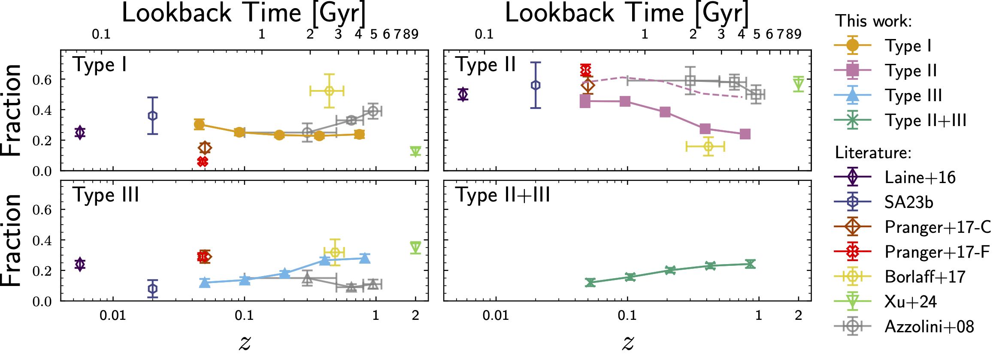
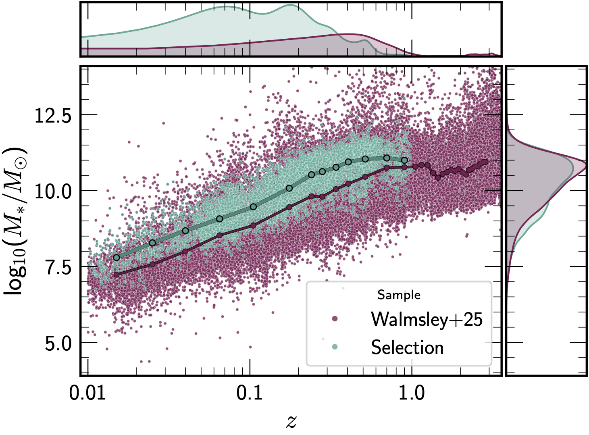

Scientific Background
Disc breaks in surface brightness profiles
Most of the baryonic mass and angular momentum of galaxies reside in the disc component, making the radial distribution of stellar light a key tracer of disc formation and evolution. It is now well established that the radial surface brightness profiles of disc galaxies frequently deviate from a single exponential, displaying changes in slope referred to as disc breaks (:cite:t:`Pohlen06`; :cite:t:`Erwin08`).
Following the classification scheme of :cite:t:`Pohlen06` and :cite:t:`Erwin08`, disc galaxy profiles are divided into three categories:
Type |
Nickname |
Description |
|---|---|---|
Type I |
Pure exponential |
Single exponential disc spanning several scale lengths with no break signature. |
Type II |
Down-bending |
Broken exponential with a steeper outer slope (truncated disc). Dominant in the local Universe (~50 % of disc galaxies at \(z<0.1\)). |
Type III |
Up-bending |
Broken exponential with a shallower outer slope (anti-truncated disc). Becomes progressively more common at higher redshift. |
Composite profiles with two or more breaks, such as Type II+III, Type III+II, Type II+II, and Type III+III, are also identified by the pipeline (Module 5).
Physical origin
Type II breaks are most commonly associated with either star-formation thresholds linked to the gas surface density (:cite:t:`Kennicutt1989`) or with radial stellar migration driven by bars and other secular processes (:cite:t:`Debattista06`). Their brighter break surface brightness (~23.0 mag arcsec⁻²) and their prevalence at late cosmic times support a scenario in which dynamically settled, gas-depleted discs preferentially develop down-bending profiles.
Type III breaks arise from a wider variety of mechanisms including minor mergers, galaxy harassment, accretion of dark matter substructure, and the build-up of thick discs or stellar haloes (:cite:t:`Borlaff14`; :cite:t:`Roediger12`). Their characteristic fainter break level (~24.2 mag arcsec⁻²) and the increase of their frequency toward higher redshifts are consistent with external environmental effects being more dominant at earlier cosmic epochs.
Redshift evolution measured with Euclid Q1
Using the pipeline described in this documentation applied to 4 385 well-classified disc galaxies out to \(z=1\), Sánchez-Alarcón et al. (2026) find:
Type II profiles are the most common locally (>50 %) but decrease steadily with lookback time.
Type III and Type II+III fractions rise from ~10 % at \(z\approx0.05\) to ~30 % each at \(z\approx1\).
The break radius correlates tightly with the outer disc scale length: \(r_\mathrm{b}/h_\mathrm{out} \approx 2.9\), irrespective of break type.
{kind=link}

Evolution of the frequency of disc break types with cosmic time (lookback time on the upper x-axis, redshift on the lower x-axis). Type I (top left), Type II (top right), Type III (bottom left), and Type II+III (bottom right). Results from this work are shown with filled symbols; literature values from Azzollini et al. (2008), Laine et al. (2014), Pranger et al. (2017), Sánchez-Alarcón et al. (2023), Borlaff et al. (2017), and Xu et al. (2024) are shown with open symbols.
Sample selection
Galaxies are drawn from the Euclid Q1 Merged catalogue (:cite:t:`EP-Aussel`; :cite:t:`Euclid-MER`) using the following criteria:
Parameter |
Label |
Criterion |
Remaining |
|---|---|---|---|
|
\(P_\mathrm{disc}\) |
> 0.6 |
84 071 |
|
\(R_\mathrm{Kron}\) |
> 11 arcsec |
14 667 |
|
\(z\) |
< 1 |
11 687 |
|Δz|/z_mean |
\(\Delta z\) |
< 0.01 |
8 748 |
The morphological disc probability \(P_\mathrm{disc}\) comes from the deep-learning catalogue of :cite:t:`Q1-SP047` using the Zoobot foundation model (:cite:t:`Walmsley23-Zoobot`).
{kind=link}

Stellar mass as a function of redshift. The parent sample (violet) and the
final disc galaxy sample (blue) are shown. Stellar masses and redshifts are
provided by the PHZ processing function.